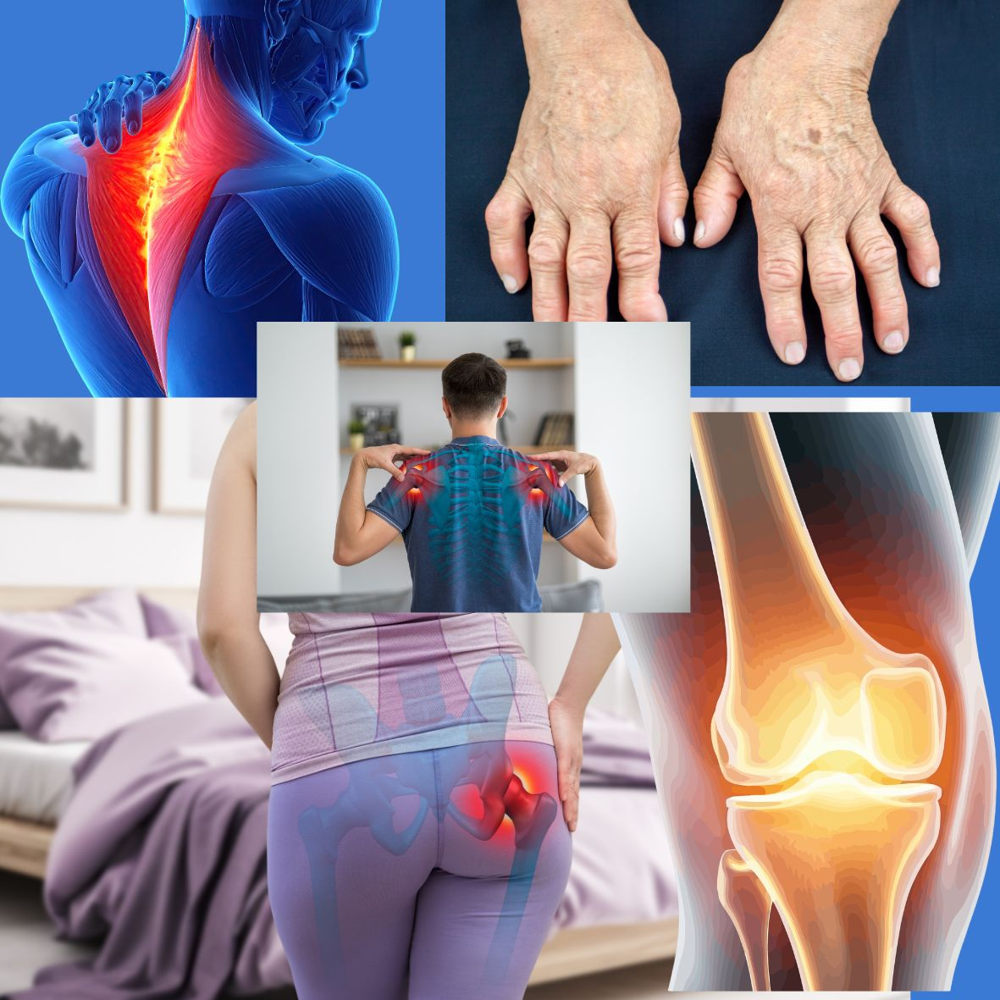

Osteoarthritis: A Guide for Everyone
Osteoarthritis (OA) is the most common form of arthritis, affecting the cartilage that cushions our joints. Over time, this cartilage wears down, causing bones to rub together — leading to pain, stiffness, and swelling. It's often linked to aging, but is also driven by joint overuse, past injuries, excess weight, and genetics. Unlike autoimmune arthritis, OA is a "wear and tear" condition rather than one caused by inflammation of the immune system, although some inflammation is involved.
Knee Osteoarthritis
The most frequent type. It causes pain when walking, climbing stairs, or standing up from a chair, often with a grinding or clicking sensation. Weight-bearing makes it worse, and many people notice stiffness after sitting for a while that eases with movement. Weight loss, strengthening the muscles around the knee, and low-impact exercise (like swimming or cycling) are key to managing it.
Hand Osteoarthritis
Commonly affects the base of the thumb and the small joints at the fingertips and middle joints. It can cause bony swellings, reduced grip strength, and difficulty with fine tasks like buttoning a shirt or opening jars. Hand exercises, splints, and joint protection techniques can help preserve function.
Hip Osteoarthritis
Typically presents as pain in the groin, buttock, or thigh, which may worsen with walking or after periods of rest. It can eventually limit how far someone can walk or make it hard to put on shoes and socks. As it advances, it may cause a noticeable limp. Physical therapy and activity modification are the mainstays of early management, with joint replacement considered for severe cases.
Shoulder Osteoarthritis
Less common than the others but can still be disabling. It affects the ability to raise the arm overhead or reach behind the back, and pain may disturb sleep, especially when lying on the affected side. Because the shoulder relies heavily on surrounding muscles and tendons, targeted physiotherapy is especially important here.
Spinal Osteoarthritis
Affects the small joints between the vertebrae, most often in the neck and lower back. It can cause localized stiffness and pain, and when it narrows the space around nerves, it may lead to numbness, tingling, or weakness radiating into the arms or legs. Posture correction, core strengthening, and sometimes nerve-focused treatments are used depending on severity.
Common Threads Across All Types
- Pain that worsens with activity and improves with rest (in early stages)
- Morning stiffness that is usually brief (under 30 minutes), unlike inflammatory arthritis
- Gradual, progressive course over years
- No cure, but many effective ways to manage symptoms and slow progression
What helps across the board: maintaining a healthy weight, staying active with joint-friendly exercise, muscle strengthening, and, when needed, pain management strategies ranging from topical treatments to physical therapy and, in advanced cases, surgery.
If joint pain is persistent, worsening, or limiting daily activities, it's worth seeing a doctor early — timely management can make a real difference in quality of life.
Have a question about your own joint pain? Message directly and ask.
Message on WhatsAppThis article is general health information and does not replace a medical consultation. In a medical emergency, call SAMU (114) or go to your nearest hospital.